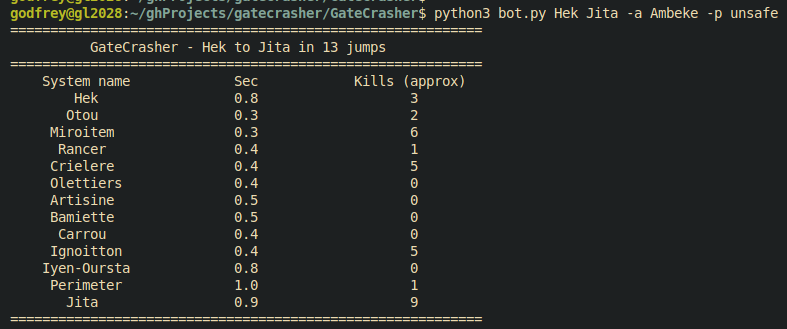

A route between 2 systems being checked for kill activity
This was my first actual project, being sick and tired of getting killed whilst autopiloting, and being too lazy to open a page to zkill, dotlan, or another tool to check for activity. I then created GateCrasher, which can be run from the terminal quickly.
GateCrasher uses Python, and the EVE Swagger Interface (ESI) API to fetch details about systems for activity, such as the security status, and how many kills occured in the last hour. For ease of use, the user can use system names as they appear in game. The route between 2 systems is analysed, with the metrics being shown for each system on the route. Users may select preferences, such as shortest route or systems with a higher security status.
EVE stores system names as integers, so as a result, the user entered systems must be transformed into an integer, then back into a word when displaying it. Coupling and Cohesion principles I learned from the Hangman Project helped me to create reusuable, modular code with minimal logic duplication.
As this was my first individual project, this was my first experience in creating my own set of requirements and specifications, and then prioritising and implementing features as I needed. This was also my first time working with terminal CLIs, which I gained experience in working with.
Although the information displayed does give some clues about activity, it is not 100% accurate. However, even tools like zkill or dotlan are not 100% accurate either. Due to the nature of EVE Online, a tool which gives you 100% accurate meta information would be far too powerful (and honestly make the game super boring!). It also lacks locational information about where kills occured in system which can be found in other tools, such as Gatecamp checker. For more accurate data, I would likely pull tools from zkill and dotlan, and use them alongside the data returned by ESI.
2026 Ching Kong Godfrey Lam